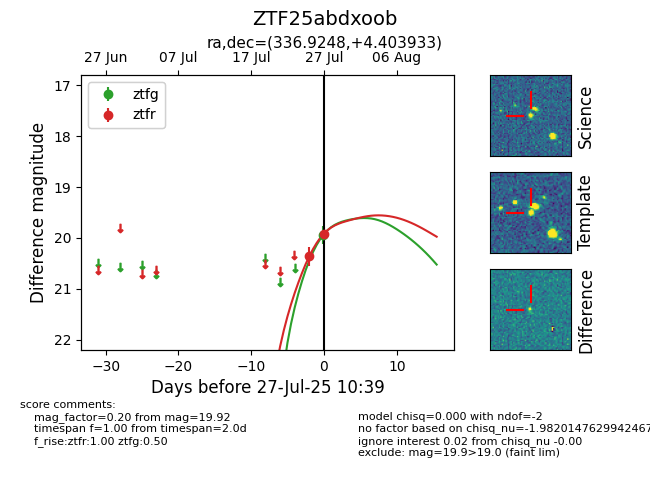

Target ZTF25abdxoob at 2025-07-27 10:39, see:
FINK: fink-portal.org/ZTF25abdxoob
Lasair: lasair-ztf.lsst.ac.uk/objects/ZTF25abdxoob
ALeRCE: alerce.online/object/ZTF25abdxoob
alt names
ZTF25abdxoob (ztf,fink)
coordinates:
equatorial (ra, dec) = (336.9248,+4.40393)
galactic (l, b) = (69.6515,-43.11539)
photometry
last ztfg=19.94, ztfr=19.92
1 ztfg, 2 ztfr detections
